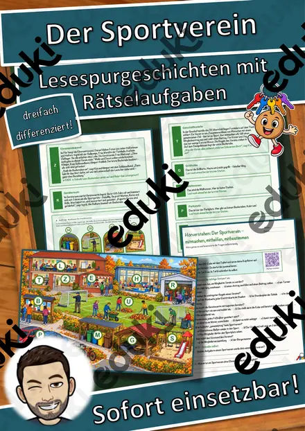
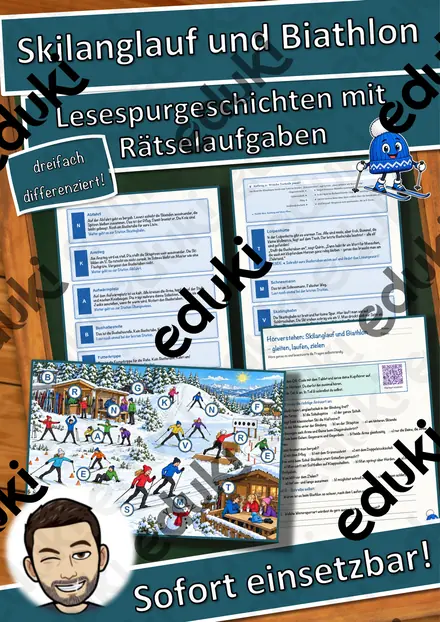
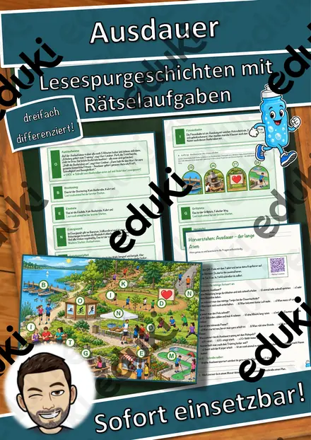
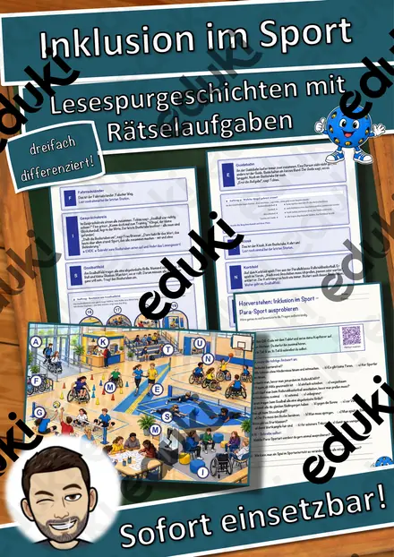
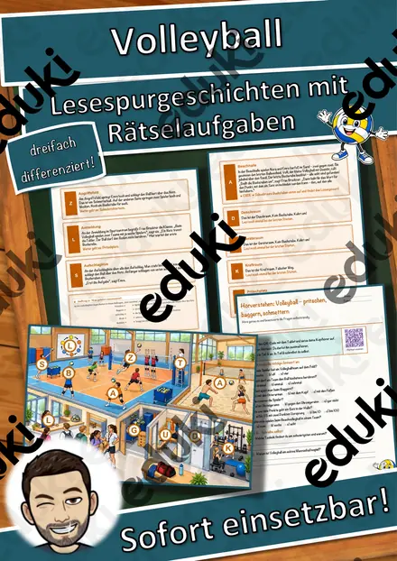
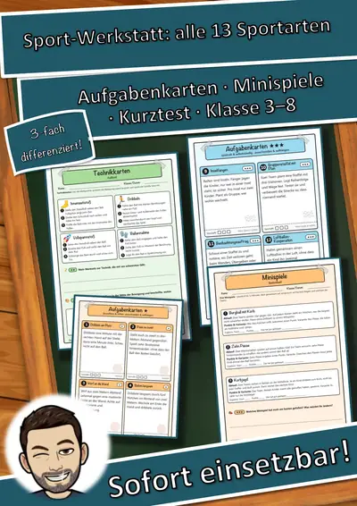
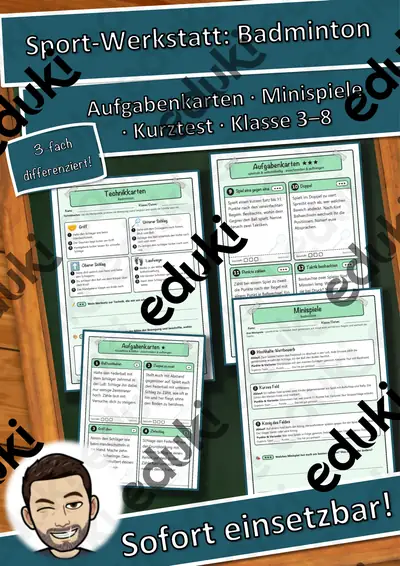
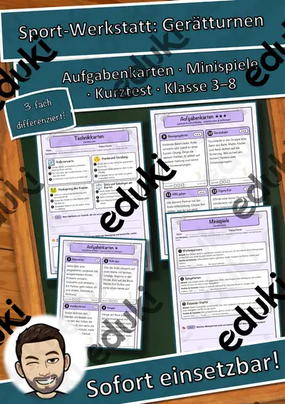
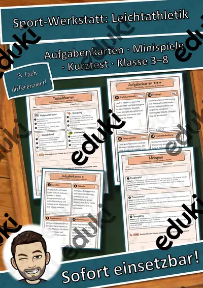
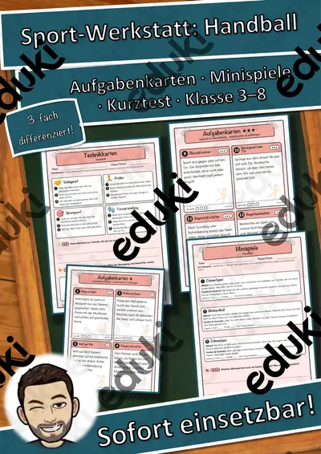

Der Sportverein – mitmachen, mithelfen, mitbestimmen – Lesespurgeschichte mit Rätselaufgaben (Klasse 8)

Skilanglauf und Biathlon – gleiten, laufen, zielen – Lesespurgeschichte mit Rätselaufgaben (Klasse 8)

Ausdauer – der lange Atem – Lesespurgeschichte mit Rätselaufgaben (Klasse 8)

Inklusion im Sport – Para-Sport ausprobieren – Lesespurgeschichte mit Rätselaufgaben (Klasse 8)

Volleyball – pritschen, baggern, schmettern – Lesespurgeschichte mit Rätselaufgaben (Klasse 8)

Sport-Werkstatt Gesamtpaket: 13 Sportarten, Aufgabenkarten in 3 Stufen (Klasse 3–8)

Sport-Werkstatt Paket Laufen & Spiele: 2 Sportarten in 3 Stufen (Klasse 3–8)

Sport-Werkstatt Paket Bewegungskünste: 4 Sportarten in 3 Stufen (Klasse 3–8)

Sport-Werkstatt Paket Schläger & Stock: 3 Sportarten in 3 Stufen (Klasse 3–8)

Sport-Werkstatt Paket Ballspiele: 4 Sportarten in 3 Stufen (Klasse 3–8)

Sport-Werkstatt Kleine Spiele & Staffeln: Aufgabenkarten in 3 Stufen & Kurztest (Klasse 3–8)

Sport-Werkstatt Klettern & Balancieren: Aufgabenkarten in 3 Stufen & Kurztest (Klasse 3–8)

Sport-Werkstatt Tanz & Gymnastik: Aufgabenkarten in 3 Stufen & Kurztest (Klasse 3–8)

Sport-Werkstatt Unihockey: Aufgabenkarten in 3 Stufen & Kurztest (Klasse 3–8)
Sport-Werkstatt Tischtennis: Aufgabenkarten in 3 Stufen & Kurztest (Klasse 3–8)

Sport-Werkstatt Badminton: Aufgabenkarten in 3 Stufen & Kurztest (Klasse 3–8)
Sport-Werkstatt Schwimmen & Baderegeln: Aufgabenkarten in 3 Stufen & Kurztest (Klasse 3–8)

Sport-Werkstatt Gerätturnen: Aufgabenkarten in 3 Stufen & Kurztest (Klasse 3–8)

Sport-Werkstatt Leichtathletik: Aufgabenkarten in 3 Stufen & Kurztest (Klasse 3–8)

Sport-Werkstatt Fußball: Aufgabenkarten in 3 Stufen & Kurztest (Klasse 3–8)

Sport-Werkstatt Handball: Aufgabenkarten in 3 Stufen & Kurztest (Klasse 3–8)

Sport-Werkstatt Volleyball: Aufgabenkarten in 3 Stufen & Kurztest (Klasse 3–8)
Sport-Werkstatt Basketball: Aufgabenkarten in 3 Stufen & Kurztest (Klasse 3–8)
Keine Materialien gefunden – versuch einen anderen Suchbegriff oder Filter.